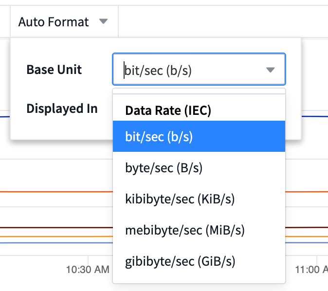

Solicitar cambios en el documento
Solicitar cambios en el documento Editar en GitHub
Editar en GitHub Guía del colaborador
Guía del colaboradorFunciones de la consola
Colaboradores
- Nomenclatura de widgets
- Ubicación y tamaño del widget
- Duplicación de un widget
- Visualización de leyendas de widgets
- Transformando las métricas
- Consultas y filtros del widget de panel
- Agrupación y agregación
- Mostrando resultados principales/inferiores
- Agrupación en widget de tabla
- Selector de rango de tiempo del panel de control
- Anulación de la hora del panel en widgets individuales
- Eje primario y secundario
- Expresiones en widgets
- Variables
- Formatear widgets de trocha
- Formateo del widget de un único valor
- Selección de la Unidad para mostrar datos
- Modo TV y auto-refrescamiento
- Grupos de consolas
- Cree un pin en los paneles favoritos
- Tema oscuro
- Interpolación de gráfico de líneas
Los paneles y widgets ofrecen una gran flexibilidad en la visualización de los datos. Estos son algunos conceptos que le ayudarán a sacar el máximo partido de sus paneles personalizados.
Nomenclatura de widgets
Los widgets se nombran automáticamente en función del objeto, métrica o atributo seleccionado para la primera consulta del widget. Si también elige una agrupación para el widget, los atributos "Agrupar por" se incluyen en la nomenclatura automática (método de agregación y métrica).

Al seleccionar un nuevo objeto o un atributo de agrupación, se actualiza el nombre automático.
Si no desea utilizar el nombre del widget automático, simplemente puede escribir un nombre nuevo.
Ubicación y tamaño del widget
Todos los widgets del panel pueden colocarse y dimensionarse de acuerdo con sus necesidades para cada panel particular.
Duplicación de un widget
En el modo de edición del panel, haga clic en el menú del widget y seleccione Duplicar. Se inicia el editor de widgets, con la configuración del widget original y con un sufijo de “copia” en el nombre del widget. Puede realizar fácilmente los cambios necesarios y guardar el nuevo widget. El widget se colocará en la parte inferior de la consola y, si es necesario, puede colocarlo. Recuerde guardar el panel cuando haya finalizado todos los cambios.

Visualización de leyendas de widgets
La mayoría de los widgets de los paneles se pueden mostrar con o sin leyendas. Las leyendas de los widgets se pueden activar o desactivar en un panel mediante cualquiera de los siguientes métodos:
-
Al mostrar el panel, haga clic en el botón Opciones del widget y seleccione Mostrar leyendas en el menú.
A medida que cambian los datos que aparecen en el widget, la leyenda de dicho widget se actualiza dinámicamente.
Cuando se muestren las leyendas, si se puede navegar hasta la página de destino del activo indicado por la leyenda, la leyenda se mostrará como un enlace a esa página de activos. Si la leyenda muestra "All", al hacer clic en el enlace se mostrará una página de consulta correspondiente a la primera consulta del widget.
Transformando las métricas
Cloud Insights proporciona diferentes opciones de transformación para ciertas métricas en widgets (específicamente aquellas métricas llamadas "personalizadas" o métricas de integración, como de Kubernetes, datos avanzados de ONTAP, plugins de Telegraf, etc.), lo que le permite visualizar los datos de varias maneras. Al añadir medidas transformables a un widget, se presenta con una lista desplegable dando las siguientes opciones de transformación:
- Ninguno
-
Los datos se muestran tal cual, sin manipulación.
- Velocidad
-
Valor actual dividido entre el intervalo de tiempo desde la observación anterior.
- Acumulativo
-
Acumulación de la suma de valores anteriores y del valor actual.
- Delta
-
La diferencia entre el valor de observación anterior y el valor actual.
- Tasa diferencial
-
Valor delta dividido por el intervalo de tiempo desde la observación anterior.
- Tasa acumulada
-
Valor acumulativo dividido entre el intervalo de tiempo desde la observación anterior.
Tenga en cuenta que la transformación de las métricas no cambia los datos subyacentes en sí, sino sólo la forma en que se muestran los datos.
Consultas y filtros del widget de panel
Consultas
El widget Consulta en un panel es una potente herramienta para administrar la visualización de los datos. A continuación, se indican algunos puntos a tener en cuenta sobre las consultas de widgets.
Algunos widgets pueden tener hasta cinco consultas. Cada consulta trazará su propio conjunto de líneas o gráficos en el widget. La configuración de acumulación, agrupación, resultados superiores/inferiores, etc. en una consulta no afecta a ninguna otra consulta del widget.
Puede hacer clic en el icono de ojo para ocultar temporalmente una consulta. El widget se actualiza automáticamente al ocultar o mostrar una consulta. Esto le permite comprobar los datos mostrados para consultas individuales al crear el widget.
Los siguientes tipos de widgets pueden tener varias consultas:
-
Gráfico de área
-
Gráfico de área apilada
-
Gráfico de líneas
-
Gráfico de spline
-
Widget de un único valor
Los demás tipos de widgets sólo pueden tener una única consulta:
-
Tabla
-
Gráfico de barras
-
Trazado de cuadros
-
Gráfico de dispersión
Filtrado en consultas de widgets de panel
Estas son algunas cosas que puede hacer para sacar el máximo partido de sus filtros.
Filtrado de coincidencia exacta
Si una cadena de filtro se debe escribir entre comillas dobles, Insight trata todo entre el primer y el último presupuesto como una coincidencia exacta. Todos los caracteres especiales o operadores incluidos en las comillas se tratarán como literales. Por ejemplo, el filtrado para "*" devolverá resultados que sean un asterisco literal; en este caso, el asterisco no será tratado como comodín. Los operadores Y, O, y NO, también se tratarán como cadenas literales cuando se encierran entre comillas dobles.
Puede usar filtros de coincidencia exactos para buscar recursos específicos, por ejemplo, el nombre de host. Si sólo quieres encontrar el nombre de host 'marketing', pero excluye 'marketing01', 'marketing-boston', etc., simplemente escriba el nombre de "marketing" entre comillas dobles.
Caracteres comodín y expresiones
Cuando esté filtrando valores de texto o lista en consultas o widgets de panel, cuando comience a escribir, se le mostrará la opción de crear un filtro * comodín* basado en el texto actual. Si selecciona esta opción, se devolverán todos los resultados que coincidan con la expresión comodín. También puede crear expresiones utilizando NOT o OR, o puede seleccionar la opción "Ninguno" para filtrar los valores nulos en el campo.

Los filtros basados en comodines o expresiones (por ejemplo, NO, O bien, "Ninguno", etc.) se muestran en azul oscuro en el campo de filtro. Los elementos seleccionados directamente de la lista se muestran en azul claro.

Tenga en cuenta que el filtrado de comodines y expresiones funciona con texto o listas, pero no con valores numéricos, fechas o valores.
Filtrado avanzado de texto con sugerencias de tipo anticipado
Cuando se selecciona un valor o valores para un campo, los otros filtros de esa consulta mostrarán los valores relevantes para ese filtro. Por ejemplo, al establecer un filtro para un objeto específico Name, el campo para filtrar para Model sólo mostrará los valores relevantes para ese objeto Name.
Tenga en cuenta que sólo los filtros de texto mostrarán sugerencias de tipo contextual. Fecha, Enum (lista), etc. no mostrará sugerencias de tipo. Dicho esto, CAN establece un filtro en un campo Enum (por ejemplo, lista) y permite filtrar otros campos de texto en contexto. Por ejemplo, al seleccionar un valor en un campo Enum como Centro de datos, otros filtros sólo mostrarán los modelos y nombres de ese centro de datos), pero no viceversa.
El intervalo de tiempo seleccionado también proporcionará contexto para los datos que se muestran en los filtros.
Selección de las unidades de filtro
A medida que escribe un valor en un campo de filtro, puede seleccionar las unidades en las que desea mostrar los valores en el gráfico. Por ejemplo, puede filtrar por capacidad sin configurar y elegir mostrar en los GIB por pérdida, o bien seleccionar otro formato, como TIB. Esto resulta útil si tiene una serie de gráficos en el panel que muestran valores en TIB y desea que todos los gráficos muestren valores coherentes.

Mejoras de filtrado adicionales
Se pueden utilizar los siguientes elementos para afinar más los filtros.
-
Un asterisco le permite buscar todo. Por ejemplo:
vol*rhel
muestra todos los recursos que empiezan con "vol" y terminan con "rhel".
-
El signo de interrogación le permite buscar un número específico de caracteres. Por ejemplo:
BOS-PRD??-S12
Muestra BOS-PRD12-S12, BOS-PRD13-S12, etc.
-
El operador OR permite especificar varias entidades. Por ejemplo:
FAS2240 OR CX600 OR FAS3270
busca varios modelos de almacenamiento.
-
El operador NOT permite excluir el texto de los resultados de búsqueda. Por ejemplo:
NOT EMC*
Encuentra todo lo que no empieza con "EMC". Puede utilizar
NOT *
para mostrar campos que no contienen ningún valor.
Identificación de objetos devueltos por consultas y filtros
Los objetos devueltos por las consultas y los filtros tienen un aspecto similar al mostrado en la siguiente ilustración. Los objetos con 'etiquetas' asignados son anotaciones mientras que los objetos sin etiquetas son contadores de rendimiento o atributos de objeto.

Agrupación y agregación
Agrupación (Rolling Up)
Los datos que se muestran en un widget se agrupan (a veces denominados "rolled up") de los puntos de datos subyacentes recopilados durante la adquisición. Por ejemplo, si tiene un widget de gráfico de líneas que muestra Storage IOPS a lo largo del tiempo, puede que desee ver una línea independiente para cada uno de sus centros de datos, para una rápida comparación. Puede optar por agrupar estos datos de una de estas formas:
-
Avg: Muestra cada línea como el promedio de los datos subyacentes.
-
Max: Muestra cada línea como el Maximum de los datos subyacentes.
-
Min: Muestra cada línea como el minimo de los datos subyacentes.
-
Suma: Muestra cada línea como la suma de los datos subyacentes.
-
* Count*: Muestra un count de objetos que han informado datos dentro del intervalo de tiempo especificado. Puede elegir la entire time Window según el intervalo de tiempo del panel de control (o el intervalo de tiempo del widget, si está configurado para anular la hora del panel de control) o una Custom Time Window que seleccione.
Para establecer el método de agrupación, haga lo siguiente.
-
En la consulta del widget, elija un tipo de activo y una métrica (por ejemplo, Storage) y una métrica (por ejemplo, Performance IOPS total).
-
En Grupo, elija un método de recuperación (como Avg) y seleccione los atributos o métricas por los que desea recuperar los datos (por ejemplo, Data Center).
El widget se actualiza automáticamente y muestra los datos de cada uno de los centros de datos.
También puede elegir agrupar All de los datos subyacentes en el gráfico o la tabla. En este caso, obtendrá una única línea para cada consulta del widget, que mostrará la media, mínima, máxima, suma o recuento de la métrica o métricas elegidas para todos los activos subyacentes.
Al hacer clic en la leyenda de cualquier widget cuyos datos están agrupados por "todos", se abre una página de consulta que muestra los resultados de la primera consulta utilizada en el widget.
Si ha establecido un filtro para la consulta, los datos se agrupan en función de los datos filtrados.
Tenga en cuenta que cuando elija agrupar un widget por cualquier campo (por ejemplo, Model), deberá filtrar por ese campo para mostrar correctamente los datos de ese campo en el gráfico o en la tabla.
Agregación de datos
Puede alinear aún más sus gráficos de series temporales (línea, área, etc.) agregando puntos de datos en cubos de minutos, horas o días antes de que esos datos se enrolen posteriormente por atributos (si se han elegido). Puede elegir agregar puntos de datos según su Avg, Max, Min o Sum, o por el punto de datos Last recogido durante el intervalo elegido. Para elegir un método de agregación, haga clic en más opciones en la sección de consulta del widget.
Un intervalo pequeño combinado con un intervalo de tiempo largo puede dar como resultado un "intervalo de agregación dio lugar a demasiados puntos de datos". advertencia. Es posible que vea esto si tiene un intervalo pequeño y aumente el lapso de tiempo del panel de control a 7 días. En este caso, Insight aumentará temporalmente el intervalo de agregación hasta que seleccione un intervalo de tiempo menor.
También puede agregar datos en el widget de gráfico de barras y en el widget de valor único.
La mayoría de los contadores de activos se agregan a Avg de forma predeterminada. Algunos contadores agregan a Max, Min o suma de forma predeterminada. Por ejemplo, los errores de puerto se agregan a suma de forma predeterminada, donde el agregado de IOPS de almacenamiento se agrega a Avg.
Mostrando resultados principales/inferiores
En un widget de gráfico, puede mostrar los resultados * Top* o Bottom de los datos acumulados y elegir el número de resultados mostrados en la lista desplegable proporcionada. En un widget de tabla, puede ordenar por cualquier columna.
Widget de gráfico arriba/abajo
En un widget de gráfico, cuando decide realizar un resumen de datos por un atributo específico, tiene la opción de ver los resultados N superior o N inferior. Tenga en cuenta que no puede elegir los resultados superior o inferior al elegir los atributos All ROLLUP.
Puede elegir los resultados que desea mostrar eligiendo Superior o inferior en el campo Mostrar de la consulta y seleccionando un valor de la lista proporcionada.
El widget de tabla muestra las entradas
En un widget de tabla, puede seleccionar el número de resultados que se muestran en los resultados de la tabla. No se le da la opción de elegir los resultados superiores o inferiores porque la tabla permite ordenar el sentido ascendente o descendente por cualquier columna bajo demanda.
Puede elegir el número de resultados que se mostrarán en la tabla del panel seleccionando un valor en el campo Mostrar entradas de la consulta.
Agrupación en widget de tabla
Los datos de un widget de tabla se pueden agrupar por cualquier atributo disponible, lo que permite ver una descripción general de los datos y profundizar en ellos para obtener más detalles. Las métricas de la tabla se reforman para facilitar la visualización en cada fila contraída.
Los widgets de tabla permiten agrupar los datos en función de los atributos establecidos. Por ejemplo, puede que desee que la tabla muestre el número total de IOPS de almacenamiento agrupadas por los centros de datos en los que residen esos almacenamientos. También puede ser conveniente mostrar una tabla de máquinas virtuales agrupadas según el hipervisor que les aloja. En la lista, puede expandir cada grupo para ver los activos de ese grupo.
La agrupación sólo está disponible en el tipo de widget Tabla.
Ejemplo de agrupación (con resumen explicado)
Los widgets de tabla permiten agrupar los datos para facilitar la visualización.
En este ejemplo, crearemos un widget de tabla en el que se muestren todas las máquinas virtuales agrupadas por centro de datos.
-
Cree o abra un panel y añada un widget Tabla.
-
Seleccione Virtual Machine como tipo de activo para este widget.
-
Haga clic en el selector de columnas y elija Hypervisor name y IOPS - total.
Esas columnas se muestran ahora en la tabla.
-
Ignoremos cualquier máquina virtual sin IOPS, e incluya solo máquinas virtuales que tengan un IOPS total superior a 1. Haga clic en el botón filtro por [+] y seleccione IOPS - total. Haga clic en any y, en el campo de, escriba 1. Deje el campo a vacío. Pulse Intro o haga clic en el campo de filtro para aplicar el filtro.
En la tabla ahora se muestran todas las máquinas virtuales con un IOPS total mayor o igual que 1. Observe que no hay agrupación en la tabla. Se muestran todas las máquinas virtuales.
-
Haga clic en el botón Agrupar por [+].
Puede agrupar por cualquier atributo o anotación que se muestre. Elija All para mostrar todas las VM de un solo grupo.
Cualquier encabezado de columna para una métrica de rendimiento muestra un menú de "tres puntos" que contiene una opción * Roll up*. El método de recuperación predeterminado es Avg. Esto significa que el número mostrado para el grupo es la media de todas las IOPS totales notificadas para cada máquina virtual dentro del grupo. Puede optar por subir esta columna por Avg, suma, Min o Max. Cualquier columna que muestre que contenga métricas de rendimiento se puede implementar de forma individual.

-
Haga clic en All y seleccione Hypervisor name.
La lista de máquinas virtuales ahora se agrupa por hipervisor. Puede expandir cada hipervisor para ver las máquinas virtuales alojadas en él.
-
Haga clic en Guardar para guardar la tabla en el panel de control. Puede cambiar el tamaño del widget o moverlo según lo desee.
-
Haga clic en Guardar para guardar el panel.
Despliegue de datos de rendimiento
Si incluye una columna para los datos de rendimiento (por ejemplo, IOPS - total) en un widget de tabla, cuando elija agrupar los datos, podrá elegir un método de despliegue para esa columna. El método de despliegue predeterminado es mostrar el promedio (avg) de los datos subyacentes en la fila de grupo. También puede elegir mostrar la suma, el mínimo o el máximo de los datos.
Selector de rango de tiempo del panel de control
Puede seleccionar el intervalo de tiempo de los datos del panel. En los widgets del panel sólo se mostrarán los datos relevantes para el intervalo de tiempo seleccionado. Puede seleccionar entre los siguientes intervalos de tiempo:
-
Últimos 15 minutos
-
Últimos 30 minutos
-
Últimos 60 minutos
-
Últimas 2 horas
-
Últimas 3 horas (este es el valor predeterminado)
-
Últimas 6 horas
-
Últimas 12 horas
-
Últimas 24 horas
-
Últimos 2 días
-
Últimos 3 días
-
Últimos 7 días
-
Últimos 30 días
-
Intervalo de tiempo personalizado
El intervalo de tiempo personalizado le permite seleccionar hasta 31 días consecutivos. También puede establecer la hora de inicio y la hora de finalización del día para este intervalo. La hora de inicio predeterminada es 12:00 AM del primer día seleccionado y la hora de finalización predeterminada es 11:59 PM del último día seleccionado. Al hacer clic en aplicar se aplicará el intervalo de tiempo personalizado al panel de control.
Anulación de la hora del panel en widgets individuales
Puede anular el ajuste del intervalo de tiempo del panel principal en widgets individuales. Estos widgets mostrarán los datos en función del marco de tiempo establecido, no del marco de tiempo del panel de control.
Para anular la hora del panel de instrumentos y forzar que un widget utilice su propio intervalo de tiempo, en el modo de edición del widget, defina Omitir hora del panel en Activado (marque la casilla) y seleccione un intervalo de tiempo para el widget. Guardar el widget en el panel.
El widget mostrará sus datos en función del intervalo de tiempo establecido, independientemente del periodo de tiempo seleccionado en el propio panel.
El intervalo de tiempo establecido para un widget no afectará a ningún otro widget del panel.
Eje primario y secundario
Las diferentes métricas utilizan diferentes unidades de medida para los datos que informan en un gráfico. Por ejemplo, al observar las IOPS, la unidad de medida es el número de operaciones de I/o por segundo de tiempo (IO/s), mientras que la latencia es únicamente una medida de tiempo (milisegundos, microsegundos, segundos, etc.). Al introducir ambas métricas en un único gráfico de línea mediante un único conjunto de valores para el eje y, los números de latencia (normalmente, unos pocos milisegundos) se registran en la misma escala con las IOPS (normalmente, la numeración es de miles) y la línea de latencia se pierde a esa escala.
Pero es posible trazar ambos conjuntos de datos en un único gráfico significativo, estableciendo una unidad de medida en el eje y primario (lado izquierdo) y la otra unidad de medida en el eje y secundario (lado derecho). Cada métrica se registra a su propia escala.
En este ejemplo se ilustra el concepto de ejes primario y secundario en un widget de gráfico.
-
Cree o abra un panel. Agregue al panel un gráfico de líneas, un gráfico de spline, un gráfico de área o un widget de gráfico de área apilado.
-
Seleccione un tipo de activo (por ejemplo, Storage) y elija IOPS - total para su primera métrica. Configure los filtros que desee y elija un método de despliegue si lo desea.
La línea IOPS se muestra en el gráfico, con su escala mostrada a la izquierda.
-
Haga clic en [+Query] para agregar una segunda línea al gráfico. En esta línea, elija Latency - total para la métrica.
Observe que la línea se muestra plana en la parte inferior del gráfico. Esto se debe a que se está dibujando a la misma escala que la línea IOPS.
-
En la consulta latencia, seleccione eje y: Secundario.
La línea latencia se dibuja ahora a su propia escala, que se muestra en el lado derecho del gráfico.

Expresiones en widgets
En un panel, cualquier widget de serie temporal (línea, spline, área, área apilada), valor único, O Widget de trocha le permite crear expresiones a partir de las métricas que elija y mostrar el resultado de esas expresiones en un único gráfico. Los ejemplos siguientes utilizan expresiones para resolver problemas específicos. En el primer ejemplo, queremos mostrar IOPS de lectura como un porcentaje de IOPS total para todos los activos de almacenamiento de nuestro entorno. El segundo ejemplo proporciona visibilidad de las IOPS del "sistema" o "sobrecarga" que se producen en su entorno: Las IOPS que no se leen ni escriben directamente.
Puede utilizar variables en expresiones (por ejemplo, $Var1 * 100)
Ejemplo de expresiones: Porcentaje de IOPS de lectura
En este ejemplo, queremos mostrar IOPS de lectura como un porcentaje de IOPS total. Puede pensar en esto como la siguiente fórmula:
Read Percentage = (Read IOPS / Total IOPS) x 100 Estos datos se pueden mostrar en un gráfico de líneas del panel. Para ello, siga estos pasos:
-
Cree un nuevo panel o abra un panel existente en modo de edición.
-
Añada un widget a la consola. Seleccione Área gráfica.
El widget se abre en el modo de edición. De forma predeterminada, se muestra una consulta que muestra IOPS - total para activos Storage. Si lo desea, seleccione un tipo de activo diferente.
-
Haga clic en el enlace convertir en expresión de la derecha.
La consulta actual se convierte al modo expresión. Observe que no puede cambiar el tipo de activo mientras está en modo expresión. Mientras se encuentra en el modo expresión, el vínculo cambia a revertir a Consulta. Haga clic en esta opción si desea volver al modo de consulta en cualquier momento. Tenga en cuenta que el cambio entre modos restablecerá los campos a sus valores predeterminados.
Por ahora, permanezca en modo expresión.
-
La métrica IOPS - total se encuentra ahora en el campo de variable alfabética "a". En el campo de la variable "b", haga clic en Seleccionar y elija IOPS - Leer.
Puede agregar hasta un total de cinco variables alfabéticas para la expresión haciendo clic en el botón + que sigue a los campos de la variable. Para nuestro ejemplo de porcentaje de lectura, sólo necesitamos el total de IOPS ("a") y el Read IOPS ("b").
-
En el campo expresión, utilice las letras correspondientes a cada variable para crear la expresión. Sabemos que Read Percentage = (Read IOPS / total IOPS) x 100, por lo que escribimos esta expresión como:
(b / a) * 100 . El campo *etiqueta* identifica la expresión. Cambie la etiqueta a "Porcentaje de lectura", o algo igualmente significativo para usted. . Cambie el campo *unidades* a "%" o "Porcentaje".
El gráfico muestra el porcentaje de lectura de IOPS con el tiempo para los dispositivos de almacenamiento seleccionados. Si lo desea, puede establecer un filtro o elegir un método de acumulación diferente. Tenga en cuenta que si selecciona suma como método ROLLUP, todos los valores porcentuales se agregan juntos, lo que puede llegar a ser superior al 100%.
-
Haga clic en Guardar para guardar el gráfico en el panel de control.
También puede utilizar expresiones en los widgets de gráfico de línea, gráfico de spline o de área apilada.
Ejemplo de expresiones: I/o "System"
Ejemplo 2: Entre las métricas recogidas de orígenes de datos se leen, escriben y totales IOPS. Sin embargo, el número total de IOPS que informa un origen de datos a veces incluye IOPS "sistema", que son aquellas operaciones de I/o que no son parte directa de la lectura o escritura de datos. Este E/S del sistema también puede considerarse como "sobrecarga" de I/o, necesaria para un funcionamiento correcto del sistema pero no está directamente relacionado con las operaciones de datos.
Para mostrar estas operaciones de I/o del sistema, puede restar IOPS de lectura y escritura a las IOPS totales de la adquisición informada. La fórmula podría tener el siguiente aspecto:
System IOPS = Total IOPS - (Read IOPS + Write IOPS) Estos datos se pueden mostrar entonces en un gráfico de línea del panel de control. Para ello, siga estos pasos:
-
Cree un nuevo panel o abra un panel existente en modo de edición.
-
Añada un widget a la consola. Seleccione Diagrama de línea.
El widget se abre en el modo de edición. De forma predeterminada, se muestra una consulta que muestra IOPS - total para activos Storage. Si lo desea, seleccione un tipo de activo diferente.
-
En el campo Roll Up, elija suma por All.
El gráfico muestra una línea que muestra la suma del total de IOPS.
-
Haga clic en el icono Duplicar esta consulta
 para crear una copia de la consulta.
para crear una copia de la consulta.Se agrega un duplicado de la consulta debajo del original.
-
En la segunda consulta, haga clic en el botón convertir a expresión.
La consulta actual se convierte al modo expresión. Haga clic en revertir a consulta si desea volver al modo de consulta en cualquier momento. Tenga en cuenta que el cambio entre modos restablecerá los campos a sus valores predeterminados.
Por ahora, permanezca en modo expresión.
-
La métrica IOPS - total se encuentra ahora en el campo de variable alfabética "a". Haga clic en IOPS - total y cámbielo a IOPS - Read.
-
En el campo de la variable "b", haga clic en Seleccionar y elija IOPS - escribir.
-
En el campo expresión, utilice las letras correspondientes a cada variable para crear la expresión. Escribimos nuestra expresión simplemente como:
a + b
En la sección pantalla, elija Área de gráfico para esta expresión.
-
El campo etiqueta identifica la expresión. Cambie la etiqueta a "System IOPS" o algo igualmente significativo para usted.
El gráfico muestra el número total de IOPS como un gráfico de líneas, con un gráfico de área donde se muestra la combinación de IOPS de lectura y escritura a continuación. La brecha entre los dos muestra las IOPS que no están relacionadas directamente con las operaciones de lectura o escritura de datos. Estos son los IOPS de "sistema".
-
Haga clic en Guardar para guardar el gráfico en el panel de control.
Para utilizar una variable en una expresión, simplemente escriba el nombre de la variable, por ejemplo, $var1 * 100. Sólo se pueden utilizar variables numéricas en expresiones.
Variables
Las variables permiten cambiar los datos que aparecen en algunos o todos los widgets de un panel de control a la vez. Al establecer uno o varios widgets para usar una variable común, los cambios realizados en un lugar provocan que los datos que aparecen en cada widget se actualicen automáticamente.
Las variables de panel vienen en varios tipos, se pueden utilizar en diferentes campos y deben seguir las reglas para la nomenclatura. Estos conceptos se explican aquí.
Tipos de variables
Una variable puede ser uno de los siguientes tipos:
-
Atributo: Utilice los atributos o métricas de un objeto para filtrar
-
Anotación: Utilizar una predefinida "Anotación" para filtrar los datos del widget.
-
Texto: Cadena alfanumérica.
-
Numérico: Un valor numérico. Lo puede utilizar por sí mismo, o como un valor "desde" o "hasta", en función del campo del widget.
-
Boolean: Se usa para campos con valores de True/False, Yes/no, etc. Para la variable booleana, las opciones son Sí, no, ninguna, ninguna.
-
Fecha: Valor de fecha. Utilícelo como valor "desde" o "hasta", en función de la configuración del widget.

Variables de atributo
La selección de una variable de tipo de atributo permite filtrar los datos del widget que contienen el valor o valores de atributo especificados. El ejemplo siguiente muestra un widget de línea que muestra tendencias de memoria libre para los nodos del agente. Hemos creado una variable para las IP de nodo de agente, que actualmente está establecida para mostrar todas las IP:

Pero si desea ver temporalmente solo nodos en subredes individuales en su entorno, puede establecer o cambiar la variable a una IP o IP de nodo de agente específica. Aquí sólo estamos viendo los nodos de la subred "123":

También puede establecer una variable para filtrar objetos all con un atributo determinado independientemente del tipo de objeto, por ejemplo, objetos con un atributo de "proveedor", especificando *.Vendor en el campo variable. No es necesario escribir "*."; Cloud Insights le proporcionará esta opción si selecciona la opción comodín.

Cuando lista desplegable de opciones para el valor de variable, los resultados se filtran de modo que solo aparezcan los proveedores disponibles en función de los objetos de la consola.

Si edita un widget en el panel donde el filtro de atributos es relevante (es decir, los objetos del widget contienen cualquier atributo *.Vendor), le indica que el filtro de atributos se aplica automáticamente.

Aplicar variables es tan fácil como cambiar los datos de atributos de su elección.
Variables de anotación
Al seleccionar una variable de anotación, se pueden filtrar los objetos asociados con esa anotación, por ejemplo, los que pertenecen al mismo centro de datos.

Texto, número, Fecha o variable booleana
Puede crear variables genéricas que no estén asociadas con un atributo determinado seleccionando un tipo de variable de Text, Number, Boolean o Date. Una vez creada la variable, puede seleccionarla en un campo de filtro de widget. Al configurar un filtro en un widget, además de valores específicos que puede seleccionar para el filtro, las variables que se hayan creado para el panel se muestran en la lista, que se agrupan en la sección "variables" del menú desplegable y tienen nombres que comienzan por "$". La elección de una variable en este filtro le permitirá buscar los valores que introduzca en el campo de variable del propio panel. Cualquier widget que utilice esa variable en un filtro se actualizará dinámicamente.

Ámbito de filtro variable
Al agregar una variable de anotación o atributo al panel, la variable se puede aplicar a los widgets All del panel, lo que significa que todos los widgets del panel mostrarán los resultados filtrados según el valor establecido en la variable.

Tenga en cuenta que sólo las variables de atributo y anotación se pueden filtrar automáticamente de este modo. Las variables sin anotación o atributo no se pueden filtrar automáticamente. Cada uno de los widgets debe configurarse para utilizar variables de estos tipos.
Para desactivar el filtrado automático de forma que la variable sólo se aplique a los widgets en los que haya definido específicamente, haga clic en el control deslizante "Filtrar automáticamente" para deshabilitarla.
Para establecer una variable en un widget individual, abra el widget en modo de edición y seleccione la anotación o atributo específico en el campo Filter by. Con una variable de anotación, puede seleccionar uno o varios valores específicos, o seleccionar el nombre de variable (indicado por el "$" inicial) para permitir escribir en la variable en el nivel del panel. Lo mismo se aplica a las variables de atributo. Sólo los widgets para los que establezca la variable mostrarán los resultados filtrados.
Para utilizar una variable en una expresión, simplemente escriba el nombre de la variable como parte de la expresión, por ejemplo, $var1 * 100. Sólo se pueden utilizar variables numéricos en expresiones. No puede utilizar anotaciones numéricas o variables de atributos en expresiones.
Nomenclatura de variables
Nombres de variables:
-
Debe incluir sólo las letras a-z, los dígitos 0-9, punto (.), subrayado (_) y espacio ( ).
-
No puede tener más de 20 caracteres.
-
Son sensibles a mayúsculas y minúsculas: $CityName y $cityname son variables diferentes.
-
No puede ser el mismo que un nombre de variable existente.
-
No puede estar vacío.
Formatear widgets de trocha
Los widgets de indicador sólido y viñeta permiten establecer umbrales para los niveles Warning y/o Critical, proporcionando una representación clara de los datos que especifique.

Para establecer el formato de estos widgets, siga estos pasos:
-
Elija si desea resaltar valores superiores a (>) o inferiores a (<) los umbrales. En este ejemplo, destacaremos valores superiores a (>) los niveles de umbral.
-
Elija un valor para el umbral "Advertencia". Cuando el widget muestra valores superiores a este nivel, muestra el indicador en naranja.
-
Elija un valor para el umbral "crítico". Los valores superiores a este nivel harán que el indicador se muestre en rojo.
Opcionalmente, puede elegir un valor mínimo y máximo para el indicador. Los valores por debajo del mínimo no mostrarán el indicador. Los valores por encima del máximo mostrarán un indicador completo. Si no elige valores mínimos o máximos, el widget selecciona min y max óptimos según el valor del widget.


Formateo del widget de un único valor
En el widget valor único, además de establecer los umbrales de advertencia (naranja) y crítico (rojo), puede elegir que los valores "en rango" (por debajo del nivel de advertencia) se muestren con fondo verde o blanco.

Al hacer clic en el vínculo de un widget de un único valor o de un widget de indicador, se mostrará una página de consulta correspondiente a la primera consulta del widget.
Selección de la Unidad para mostrar datos
La mayoría de los widgets de un panel permiten especificar las unidades en las que se muestran los valores, por ejemplo, megabytes, miles, Porcentaje, milisegundos (ms), etc. En muchos casos, Cloud Insights conoce el mejor formato para los datos que se van a adquirir. En los casos en los que no se conoce el mejor formato, puede definir el formato que desee.
En el siguiente ejemplo del gráfico de líneas, se sabe que los datos seleccionados para el widget están en bytes (la unidad de datos IEC básica: Consulte la tabla siguiente), de modo que la unidad base se selecciona automáticamente como 'byte (B)'. Sin embargo, los valores de los datos son lo suficientemente grandes como para que se presenten como gibibytes (GIB), por lo que Cloud Insights formatea automáticamente los valores como GIB. El eje y del gráfico muestra "GIB" como unidad de visualización y todos los valores se muestran en términos de dicha unidad.

Si desea mostrar el gráfico en una unidad diferente, puede elegir otro formato en el que mostrar los valores. Dado que la unidad base de este ejemplo es byte, puede elegir entre los formatos "basados en bytes" compatibles: Bit (b), byte (B), kibibyte (KiB), mebibyte (MIB), gibibyte (GIB). La etiqueta y los valores del eje y cambian según el formato que elija.

En los casos en que no se conoce la unidad base, puede asignar una unidad desde entre la "unidades disponibles", o escriba el suyo propio. Una vez que asigne una unidad base, podrá seleccionar esta opción para mostrar los datos en uno de los formatos compatibles adecuados.

Para borrar la configuración y volver a iniciar, haga clic en Restablecer valores predeterminados.
Una palabra sobre el formato automático
La mayoría de las métricas son notificadas por los recopiladores de datos de la unidad más pequeña, por ejemplo, como un número entero, como 1,234,567,890 bytes. De forma predeterminada, Cloud Insights formateará automáticamente el valor de la pantalla más legible. Por ejemplo, un valor de datos de 1,234,567,890 bytes se formatearía automáticamente a 1.23 gibibytes. Puede elegir mostrarla en otro formato, como mebibytes. El valor se mostrará en consecuencia.

|
Cloud Insights utiliza estándares de denominación de números en inglés americanos. Los "mil millones" americanos equivalen a "mil millones". |
Widgets con varias consultas
Si tiene un widget de serie temporal (es decir, línea, spline, área, área apilada) que tiene dos consultas en las que se traza el eje y primario, la unidad base no se muestra en la parte superior del eje Y. Sin embargo, si el widget tiene una consulta en el eje y primario y una consulta en el eje y secundario, se muestran las unidades base de cada una de ellas.

Si el widget tiene tres o más consultas, las unidades base no se muestran en el eje Y.
Unidades disponibles
La siguiente tabla muestra todas las unidades disponibles por categoría.
Categoría |
Unidades |
Moneda |
centavo dólar |
Datos (IEC) |
byte de bit kibibyte mebibyte de gibibyte tebibyte de pebibyte exbibyte |
Fecha de referencia (IEC) |
bit/s byte/s kibibyte/s mebibyte/s gibibyte/s tebibyte/s pebibyte/s. |
Datos (métrico) |
kilobytes megabyte terabyte de terabyte de petabyte |
Fecha de referencia (métrico) |
kilobit/s megabyte/s gigabyte/s terabyte/s, petabyte/s, exabyte/s. |
IEC |
el kibi mebi gibi tebi pebi exbi |
Decimal |
miles de millones de millones de billion trillón |
Porcentaje |
porcentaje |
Tiempo |
nanosegundo microsegundo milisegundos segundo minuto hora |
Temperatura |
celsius fahrenheit |
Frecuencia |
hertz kilohertz megahertz gigahercios |
CPU |
micronúcleos nanocores núcleos milimetros kilonúcleos megacoros gigaflores teracores petacoros exacores |
Rendimiento |
Operaciones de I/o por segundo operaciones/s solicitudes/s lecturas/s escrituras/s operaciones/s mín. De lecturas/escrituras mín./min |
Modo TV y auto-refrescamiento
Los datos de los widgets de los paneles y las páginas de inicio de activos se actualizan automáticamente según un intervalo de actualización determinado por el intervalo de tiempo del panel seleccionado (o intervalo de tiempo del widget, si está configurado para anular la hora del panel). El intervalo de actualización se basa en si el widget es una serie de tiempo (línea, spline, área, gráfico de área apilado) o no una serie de tiempo (todos los demás gráficos).
Intervalo de tiempo del panel de control |
Intervalo de actualización de serie temporal |
Intervalo de actualización sin serie temporal |
Últimos 15 minutos |
10 segundos |
1 minuto |
Últimos 30 minutos |
15 segundos |
1 minuto |
Últimos 60 minutos |
15 segundos |
1 minuto |
Últimas 2 horas |
30 segundos |
5 minutos |
Últimas 3 horas |
30 segundos |
5 minutos |
Últimas 6 horas |
1 minuto |
5 minutos |
Últimas 12 horas |
5 minutos |
10 minutos |
Últimas 24 horas |
5 minutos |
10 minutos |
Últimos 2 días |
10 minutos |
10 minutos |
Últimos 3 días |
15 minutos |
15 minutos |
Últimos 7 días |
1 hora |
1 hora |
Últimos 30 días |
2 horas |
2 horas |
Cada widget muestra su intervalo de actualización automática en la esquina superior derecha del widget.
La actualización automática no está disponible para el intervalo de tiempo personalizado del panel.
Cuando se combina con modo TV, la actualización automática permite la visualización casi en tiempo real de los datos en un panel o página de activos. El modo TV proporciona una visualización desembragada; el menú de navegación está oculto, proporcionando más propiedades de pantalla para la visualización de datos, al igual que el botón Editar. El modo TV ignora los tiempos de espera habituales de Cloud Insights, dejando la pantalla en directo hasta que se cierra la sesión de forma manual o automática mediante protocolos de seguridad de autorización.
|
|
Dado que Cloud Central de NetApp tiene su propio tiempo de espera de inicio de sesión de usuario de 7 días, Cloud Insights también debe cerrar la sesión con ese evento. Simplemente puede iniciar sesión de nuevo y el panel seguirá mostrándose. |
-
Para activar el modo TV, haga clic en
 botón.
botón. -
Para desactivar el modo TV, haga clic en el botón salir de la parte superior izquierda de la pantalla.

Puede suspender temporalmente la actualización automática haciendo clic en el botón Pausa en la esquina superior derecha. Durante la pausa, el campo intervalo de tiempo del panel mostrará el intervalo de tiempo activo de los datos en pausa. Los datos aún se adquieren y se actualizan mientras la actualización automática está en pausa. Haga clic en el botón Reanudar para continuar con la actualización automática de los datos.

Grupos de consolas
La agrupación permite ver y gestionar paneles relacionados. Por ejemplo, puede tener un grupo de consola dedicado al almacenamiento de su entorno. Los grupos de paneles se gestionan en la página Paneles > Mostrar todos los paneles.

De forma predeterminada, se muestran dos grupos:
-
Todos los paneles muestran todos los paneles que se han creado, independientemente del propietario.
-
Mis paneles sólo muestra los paneles creados por el usuario actual.
El número de paneles incluidos en cada grupo se muestra junto al nombre del grupo.
Para crear un grupo nuevo, haga clic en el botón "+" Crear nuevo grupo de paneles. Introduzca un nombre para el grupo y haga clic en Crear grupo. Se crea un grupo vacío con ese nombre.
Para agregar paneles al grupo, haga clic en el grupo All Dashboards para mostrar todos los paneles de control en su entorno, de haga clic en My Dashboards si sólo desea ver los paneles que posee y realice una de las siguientes acciones:
-
Para agregar un único panel, haga clic en el menú situado a la derecha del panel y seleccione Add to Group.
-
Para agregar varios paneles a un grupo, selecciónelos haciendo clic en la casilla de verificación situada junto a cada panel y, a continuación, haga clic en el botón acciones masivas y seleccione Add to Group.
Elimine los paneles del grupo actual de la misma manera seleccionando Remove from Group. No puede quitar paneles del grupo All Dashboards ni My Dashboards .
|
|
Al quitar un panel de un grupo, no se elimina el panel de Cloud Insights. Para eliminar completamente un panel, seleccione el panel y haga clic en Delete. Esto lo elimina de cualquier grupo al que pertenecía y ya no está disponible para ningún usuario. |
Cree un pin en los paneles favoritos
Puede gestionar aún más los paneles mediante la fijación de sus favoritos en la parte superior de la lista del panel de control. Para fijar un panel, simplemente haga clic en el botón de huella digital que aparece al pasar el ratón sobre un panel de cualquier lista.
El pin/unpin del panel es una preferencia de usuario individual e independiente del grupo (o grupos) al que pertenece el panel.

Tema oscuro
Puede elegir mostrar Cloud Insights utilizando un tema claro (el predeterminado), que muestra la mayoría de las pantallas con un fondo claro con texto oscuro o un tema oscuro que muestra la mayoría de las pantallas con un fondo oscuro con texto claro.
Para cambiar entre temas claros y oscuros, haga clic en el botón de nombre de usuario de la esquina superior derecha de la pantalla y elija el tema que desee.

Vista de panel de temas oscuros:
Vista de panel de temas ligeros:
|
|
Algunas áreas de la pantalla, como ciertos gráficos del widget, todavía muestran fondos claros incluso mientras se visualizan en temas oscuros. |
Interpolación de gráfico de líneas
Los diferentes recopiladores de datos a menudo sondean sus datos a intervalos diferentes. Por ejemplo, el recopilador de datos A puede sondear cada 15 minutos mientras que el recopilador de datos B sondea cada cinco minutos. Cuando un widget de gráfico de líneas (también gráficos de spline, área y área apilada) está agregando estos datos de varios recopiladores de datos en una sola línea (por ejemplo, cuando el widget se agrupa por "todos"), Y actualizando la línea cada cinco minutos, los datos del colector B se pueden mostrar con precisión mientras que los datos del colector A pueden tener huecos, afectando así al agregado hasta que el colector vuelva a sondear.
Para aliviar esto, Cloud Insights interpola los datos al agregar, utilizando los puntos de datos circundantes para tomar una "mejor conjetura" en los datos hasta que los recopiladores de datos sondean de nuevo. Siempre puede ver los datos de objetos de cada recopilador de datos individualmente ajustando la agrupación del widget.